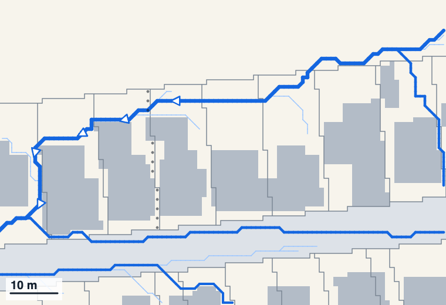
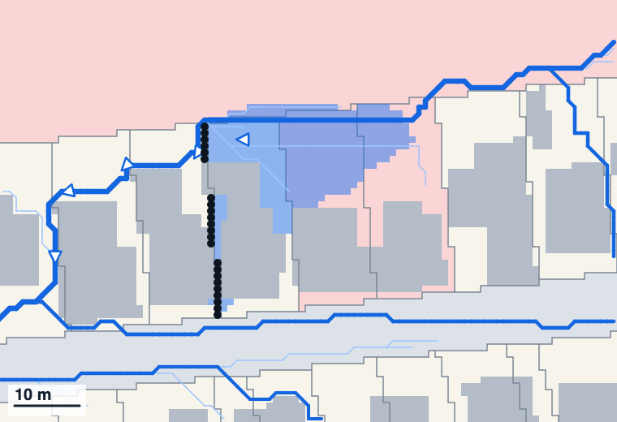
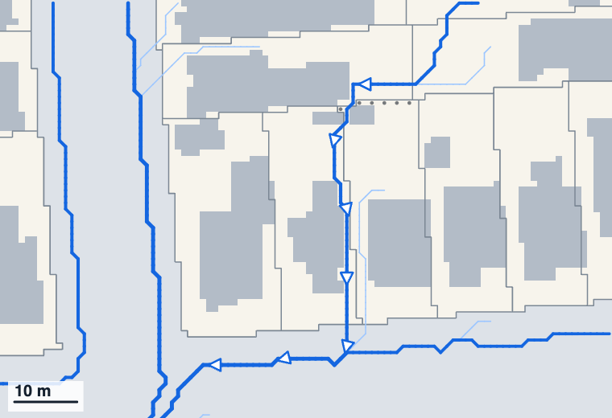
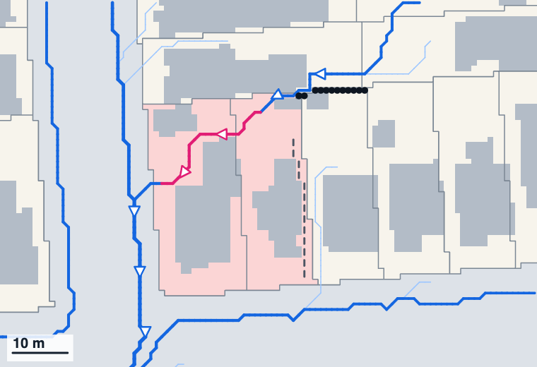
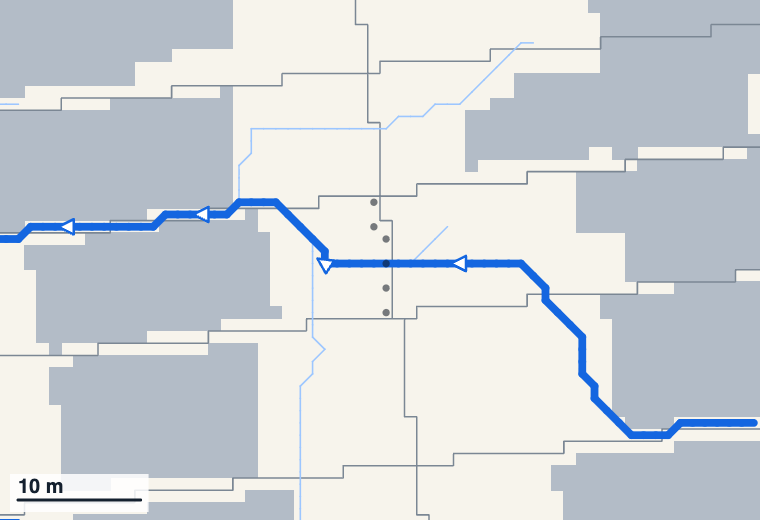
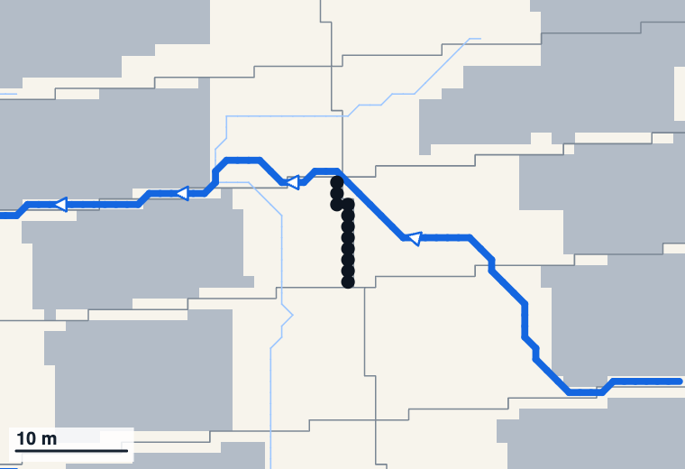
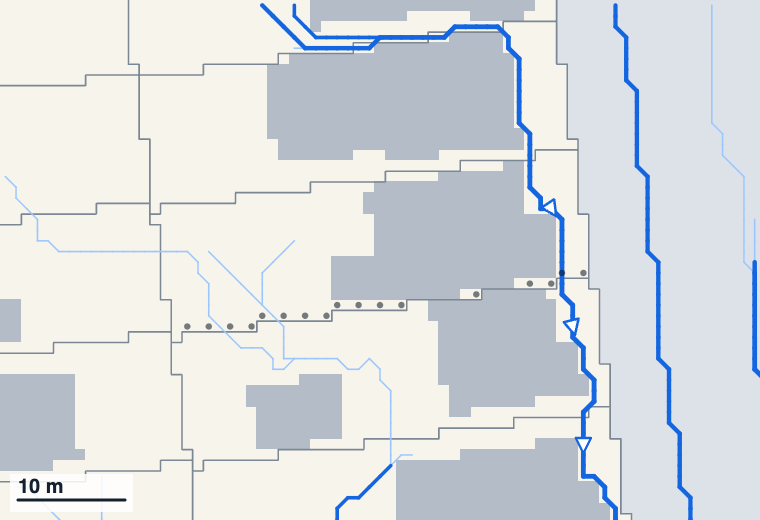
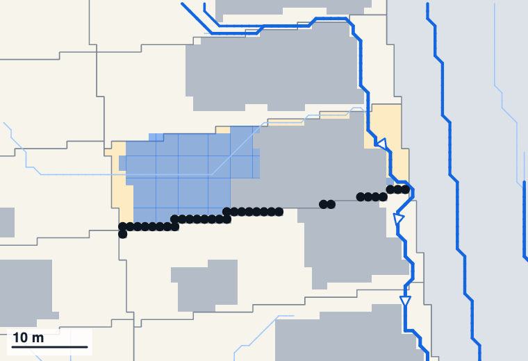
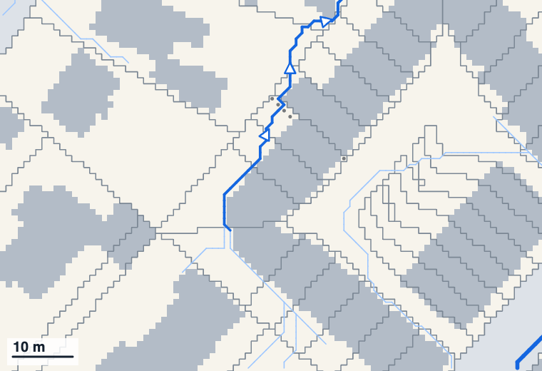
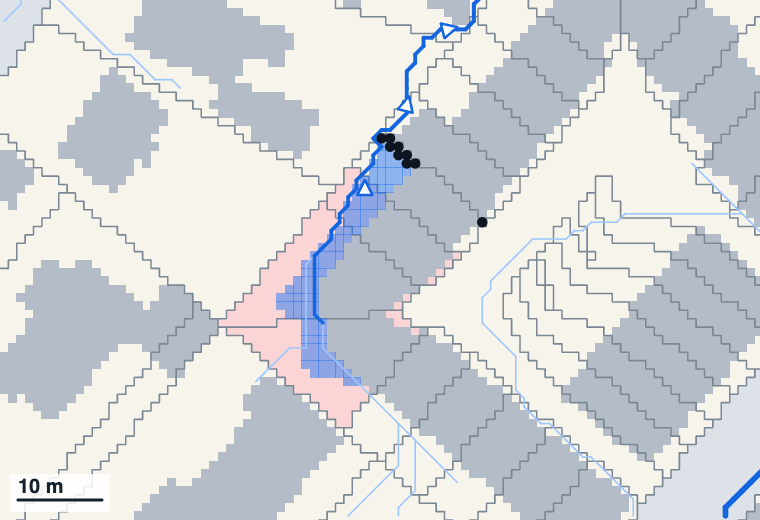

A fence across an overland flow path must not obstruct it.
That means no “ponding beyond the boundaries of the property” and no “diverting the entry or exit point”. It applies wherever more than 4,000 m² of land drains to the fence. Auckland Unitary Plan, chapter E36.
2. Our hypothesis
The 4,000 m² line is wrong about as often as it is right.
Nobody can run the rule’s test on a fence without a site visit, so the line stands in for it. We think the line doesn’t pick out the fences that do harm.
3. What we found
Tested on all 1,015 fence lines in one area, the rule is right on 4 in 10.
Right40039%260 caught that do harm, 140 left alone that don’t
Wrong31031%Caught by the rule, but a solid fence there does no harm
Missed9810%Does harm, but under the line, so the rule is silent
Can’t say20720%Water on the uphill neighbour only. The wording doesn’t decide
Wrong or missed 408 times, right 400. The hypothesis holds. So test every fence line, and keep the answers on a map.
How we got there
Found every fence line. A fence line is a property boundary that a mapped flow path crosses. In 2.6 km² around Ponsonby there are 1,015.
Stood a solid fence on each. 1.8 m high, one at a time, and ran the water again.
Asked the rule’s two questions. Does water now stand on someone else’s land? Does the flow path now cross a boundary somewhere new? Either one, and the fence does harm.
Compared the answers with the 4,000 m² line.
The line against the rule’s own test, for all 1,015 fence lines
Does harm
No harm
Depends
Over the line rule applies, 721
260right
310wrong
151can’t say
Under the line rule silent, 294
98missed
140right
56can’t say
Right 260 + 140 = 400. Wrong 310. Missed 98. On the other 207 the water stands only on the uphill neighbour’s land, and the rule’s wording can’t say whether that counts for a shared fence.
Checked whether size is the signal. It isn’t. About a third of fence lines do harm however much land drains to them.
Share of fence lines that do harm, by how much land drains to them
2,000 to 4,000 m² (under the line)
33%4,000 m² to 1 ha
31%1 to 3 ha
39%3 to 10 ha
36%Over 10 ha
41%
What decides it is the ground around the fence: whether the water has somewhere else to go.
Five real fence lines
Real places, no addresses. Left: as mapped. Right: with a solid fence.
the fence (dots: where it would go)flow path, arrows point downhillnew routeold route, now drywater standingproperty affecteduphill neighbourbuildingstreet
The test gets it right
1. Floods the yards behind it

As mapped

With a solid fence
Rain from 4.3 ha runs down this side boundary. A solid fence backs it up 1.1 m deep across three other properties’ yards, after about 7 mm of rain.
Rule: fails on ponding. Correct.
There now, from the air: 2.1 m high with an uneven top. A hedge, or a fence under plants. On the map
The test gets it right
2. Sends the water next door

As mapped

With a solid fence
Rain from 4,170 m² runs down between two houses. A solid fence turns it through two other properties to the next street. Nothing ponds.
Rule: fails on diverting. Correct. A rule about ponding alone would miss it.
There now, from the air: 1.9 m high with a level top. Looks like a fence. On the map
The test gets it right, the line doesn’t
3. Big flow path, no harm

As mapped

With a solid fence
Rain from 18 ha, 45 times the line. The water slips round the end of a solid fence and rejoins its route. Nothing ponds, nothing moves.
Rule: passes. Correct. But it is over the line, so Council’s leaflet would still have it cut open.
The catch. The water gets round through the next boundary along. If that is fenced solid too, the answer changes.
There now, from the air: 2.1 m high with a level top. Looks like a fence. On the map
The wording runs out
4. Water on the uphill neighbour only

As mapped

With a solid fence
A solid fence traps runoff in the yard above it: 32 cm deep over 178 m², after about 27 mm of rain. All on one neighbour’s land.
Rule: can’t say. A shared fence has no single “property”. It fails if the downhill neighbour built it and passes if the uphill one did.
There now, from the air: 2.0 m high with a level top. Looks like a fence. On the map
The line misses it
5. Small flow path, real harm

As mapped

With a solid fence
Only 2,834 m² drains here, under the line. A solid fence still puts water 28 cm deep on three other properties, after about 7 mm of rain.
Rule: doesn’t apply. Wrong. It is the same harm as example 1.
There now, from the air: 1.6 m high with a level top. Looks like a fence. On the map
What to do instead
Give every fence line a status, worked out by the model, on the flow path map Council already keeps.
Any fence
450 of 1,015
A solid fence here does no harm. Nothing to do, nobody to visit.
Keep it open
358 of 1,015
A solid fence here does harm. Open at the base, or get consent.
To decide
207 of 1,015
Water on the uphill neighbour only. Council decides once whether that counts.
Active means it stays current:
It re-runs when the ground changes: a new laser survey, a new building, a subdivision.
It records what a visit or a photo finds: solid, or open at the base.
A fence confirmed solid goes in as a wall, so the fences downstream are tested against what is really there.
The rule changes in four places:
Keep the test. It is the right one.
Drop the 4,000 m² line. The map says where the rule applies.
Put the requirement on the fence line, not on whoever built the fence. Three in four are shared.
Size the opening to the water. Today it is 150 mm whether 0.4 ha drains to the fence or 167 ha.
The Plan already treats its flow path map this way: “indicative only”, corrected by a site report, and updated continually. This adds one layer to it.
Who uses it. Someone building a fence checks the address first. Council visits the 88 fence lines that do harm and already look like a fence from the air, not all 1,015.
What we haven’t shown
Whether a fence is solid. The laser can’t see a gap under the palings. That takes a photo or a visit.
Fences together. We test one at a time. “No harm” can change if the next fence along is solid too.
Flow rates. The model knows where water goes and how deep it stands, not how fast it arrives. Half the ponds that cross a boundary fill with under 5 mm of rain, four in five with 25 mm.
The cut-offs. Ponding is 10 cm deep over 5 m² of a property. A moved crossing is more than 5 m. The Plan gives no numbers, so these are ours.
The ground. One area, nothing checked on site. Rule wording is from Council’s 2020 practice note. Not a legal opinion.